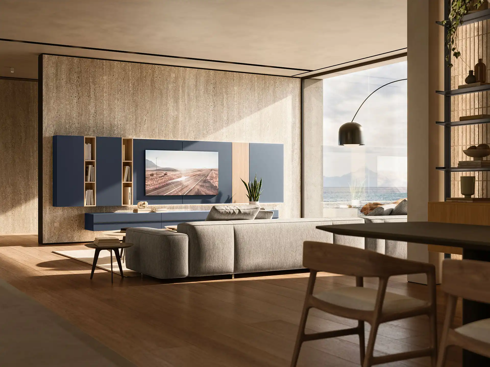

Cuisine italienne
à Angoulême
En Charente, une cuisine Armony dessinée pour votre maison, suivie par un seul interlocuteur.
Votre cuisine
à Angoulême
Angoulême est à environ 210 km du showroom FirstDiff de Tours. Nous menons le projet avec vous par téléphone et par e-mail, à partir du configurateur 3D ou de votre plan, jusqu’à une proposition détaillée.
Maisons charentaises en pierre, appartements du plateau, rénovations dans le Cognaçais : nous adaptons l’implantation à la pièce, en linéaire, en L, en U ou avec un îlot.
Une cuisine de caractère
Les façades à cadre Etro ou Quadro, en laque mate ou en bois, s’accordent avec les intérieurs en pierre et les tomettes. Un plan de travail en marbre ou en grès veiné complète l’ensemble.
Fabriquée en Italie, pensée pour durer
Cinquante ans de savoir-faire, une usine à Caneva, au nord-est de l’Italie, et plus de deux cents finitions.
Caisson
Panneau de classe E1, à faibles émissions, issu de bois recyclé.
Façades
Laques, bois, Fenix, Lamitech, verre ou grès, selon la collection.
Charnières
En acier, à fermeture amortie, réglables dans les trois directions.
Certifications
ISO 9001, ISO 14001, FSC et CARB2 pour le site de production.
Un projet
à Angoulême ?
Appelez-nous de 9 h à 19 h, ou laissez vos coordonnées : nous vous rappelons.
Comment se passe un projet depuis la Charente ?
Vous nous décrivez la pièce ou composez votre cuisine en 3D, nous vous appelons pour préciser les mesures, puis vous recevez une proposition détaillée. La pose est assurée par un cuisiniste partenaire.
Peut-on voir les matières avant de choisir ?
Oui, au showroom de Tours sur rendez-vous, ou grâce aux échantillons et aux catalogues que nous vous présentons.
Comment se déroule un projet ?
Vous composez votre cuisine dans le configurateur 3D ou vous nous décrivez vos envies. Nous vous appelons pour préciser les mesures, l’usage et le budget, puis vous recevez une proposition détaillée, finitions et électroménager compris. La cuisine est fabriquée en Italie, puis livrée et posée par un cuisiniste partenaire.